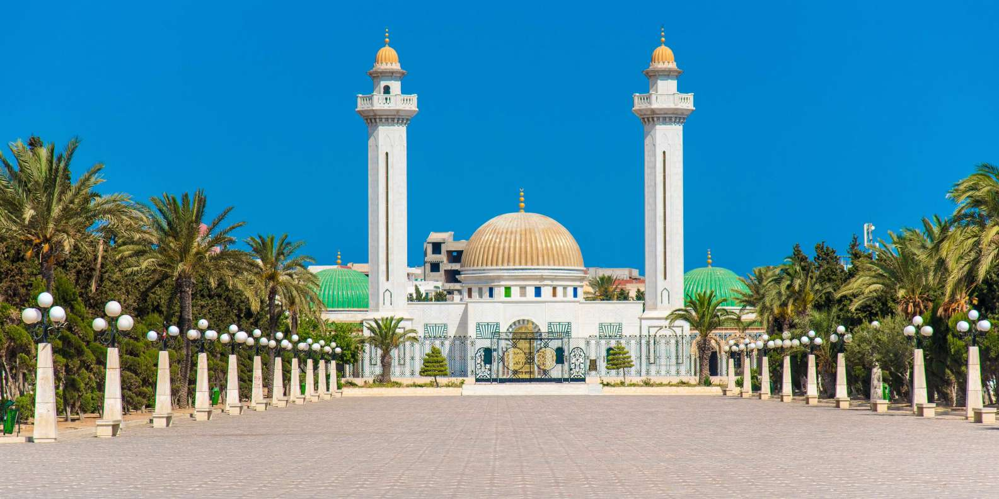
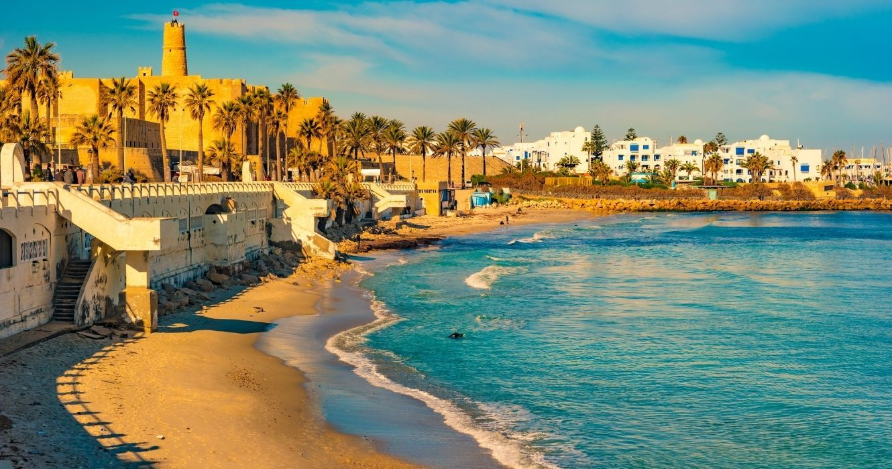

الأماكن السياحية والأثرية
أهم المعالم السياحية والأثرية بالمنستير

ضريح بورقيبة
بني وفقا لخصائص العمارة التقليدية هو نصب تذكاري دفني بما في ذلك إيواء رفات الرئيس السابق الحبيب بورقيب

حصن الرباط
يُعد من أهمّ وأقدم الحصون الدفاعيّة الإسلامية في المغرب العربي، وأبرز معالم مدينة المنستير التونسية.

الشريط الساحلي
يمثل أحد أهم رموز هذه الولاية إذ يوصف بجماله ورونقه ومجال امتداده الشاسع